Introduction
Folio is a reader for RISC OS. It opens PDFs and ebooks (EPUB, FB2, MOBI, CBZ comics and XPS), keeps your place in each, and lets you highlight, add notes, fill in forms, sign, and make new PDFs from pictures, text files and other PDFs.
It is built on MuPDF, the same library many PDF readers on other computers use, so documents look as their authors meant them to. Everything else (the windows, menus, the bookshelf) is written for the RISC OS desktop.
About this guide
The guide comes with Folio: choose User guide from the menu on Folio's icon bar icon, and it opens in your web browser (NetSurf, for example). If no web browser is set up, Folio tells you so. The file itself is !Folio.Guide.index/html, if you'd rather open it yourself. It's also on its own in Folio-User-Guide.zip, with each release.
You don't need to read it in order. If all you want is to read a book, Part II is for you. If you've been sent a form to fill in and sign, go to Chapter 12 and Chapter 19. If you want to join some scans into one PDF, it's Chapter 15.
The pictures are screenshots of Folio on RISC OS 5. The documents in them were made for this guide.
This is a test version
Folio is still in test builds, and you may come across bugs. Folio never changes a file until you save it, and each change can be undone (Ctrl+Z) until then, but keep a copy of anything that matters before you save changes to it.
What we assume you know
Not much. You should know the three mouse buttons (Select on the left, Menu in the middle, Adjust on the right), how to drag a file from a Filer window into a program, and how to save by dragging a file icon from a save box to a Filer window.
The boxes in this guide
Where to start
If Folio isn't installed yet, start at Chapter 2. If it is, go to Chapter 3. The Appendix lists every key, mouse action and menu on one page; it's worth printing.
Part I: Getting StartedInstalling Folio and finding your way round
1 What Folio does
Folio does three kinds of job.
Reading
Folio shows PDFs page after page in one scrolling window, at the size you like, one page or two side by side, on white, dark or sepia paper. It reopens each document at the page where you left it. Ebooks are laid out into pages for you. A bookshelf shows the covers of your books and how far you've read each one. You can follow links, use a document's contents list, search for words, and look a word up in a dictionary.
Working with PDFs
You can highlight, underline and strike out text, add notes, draw, put on a stamp or your handwritten signature, measure distances on a plan, fill in forms (including Adobe's XFA forms), and sign a PDF digitally with your own certificate. Folio checks the signatures in PDFs you're sent, too.
Making and changing PDFs
You can turn, delete, move and add pages, lay a page from one file over the pages of another (your initials on every page, say), join PDFs, pictures and text files into one new PDF, and scan straight into a PDF from a network scanner. You can also take things out: some pages as a new PDF, pages as pictures, the text as a text file, or a page as a Draw file.
2 Installing and starting
What you need
- RISC OS 5 on an ARMv7 computer or later: a Raspberry Pi 2 or newer, for example.
- A screen mode with 32 thousand colours or more.
- The SharedUnixLibrary, ARMEABISupport and PThreadTicker modules. PThreadTicker comes in Folio's zip; the others come with RISC OS or from PackMan.
- To look words up: a network connection. Folio loads the URL_Fetcher, AcornHTTP and AcornSSL modules from
!Systemthe first time.
Installing
- Unzip
Folio-<version>.zipwith SparkFS or another unzipper that keeps filetypes. - Copy
!Folioto where you keep your programs (Apps, for example). - Double-click
!Folio. Its icon appears on the icon bar.
Folio is also in PackMan. Add the source https://adyoull.github.io/riscos-packages/pkg/index and install Folio from there; PackMan then keeps it up to date.
Once the Filer has seen !Folio, double-clicking a PDF starts Folio and opens it.
The plugins
Three extras are separate downloads, so the main zip stays small. Each comes as a zip with its own !Folio inside: drag that !Folio over yours in the Filer, and the Filer adds the plugin's files to it. Then quit Folio and run it again.
| Plugin | What it adds |
|---|---|
| FolioSpeech | Reading aloud, with natural-sounding voices (Chapter 8). It needs a Raspberry Pi 2 or later and John Duffell's SharedSoundBuffer and StreamManager modules. |
| FolioOCR | Text recognition: reading the words in scanned pages, so you can search, select and copy them (Chapter 8). |
| FolioCJK | A font for Chinese, Japanese and Korean text, for documents that don't carry their own. |
The icon bar
Click Select on Folio's icon bar icon to open your bookshelf (Chapter 6). Drag a document to the icon to open it. Click Menu on it for the icon bar menu.
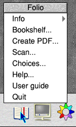
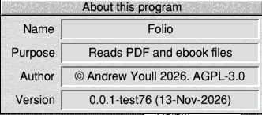
| Item | Does |
|---|---|
| Info | Shows the version. Quote it when you report a problem. |
| Bookshelf... | Opens the bookshelf, as a click on the icon does. |
| Create PDF... | Opens a window to join files into one PDF (Chapter 15). |
| Scan... | Scans from a network scanner (Chapter 15). |
| Choices... | Folio's settings (Chapter 5 and Chapter 17). |
| Help... | Opens !Help, a short text description of everything. |
| User guide | Opens this guide in your web browser. |
| Quit | Leaves Folio. If a document has changes you haven't saved, Folio asks first. |
3 The document window
Each document opens in a window of its own. If you open one that's already open, its window comes to the front instead.
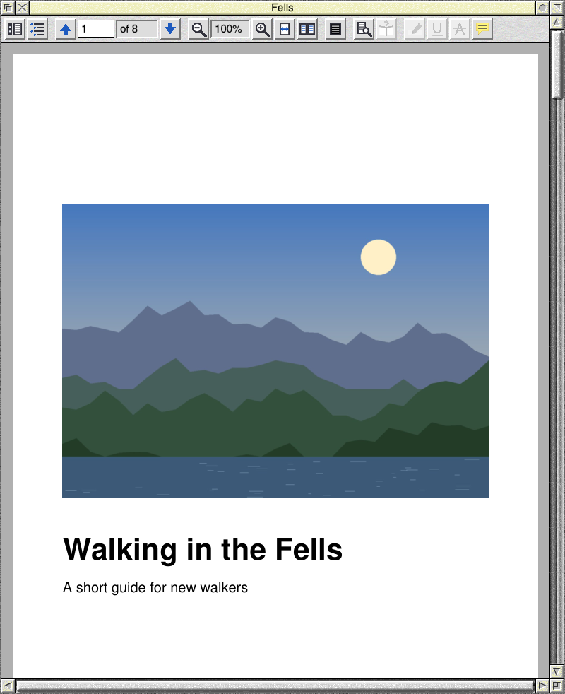
The toolbar
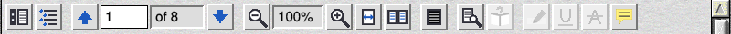
From the left, the buttons are:
| Button | Does |
|---|---|
| Thumbnails | Shows small pages down the left of the window (Chapter 4). |
| Contents | Lists the document's chapters and sections. |
| Up arrow, page number, Down arrow | The previous page, the page you're on (type a number and press Return to go there), and the next page. Next to the number is how many pages there are. |
| Zoom out, scale, Zoom in | Make the pages smaller or larger. The scale shows how large. |
| Fit width | Scales the page to fill the window's width. |
| Two pages | Shows the pages side by side, as in an open book. |
| Dark page | Shows light text on black. |
| Find | Searches the document for words. |
| Define | Looks up the selected word. |
| Highlight, Underline, Strike out, Note | Mark the selected text, or add a note (Chapter 9). They're grey until you select some text in a PDF. |
| Read aloud | With the Speech plugin only: reads the document to you. |
Rest the pointer on a button for a moment to see its name. If the window is too narrow for every button, arrows appear at the toolbar's right-hand end: click them, or turn the mouse wheel over the toolbar, to see the rest. View → Toolbar hides the toolbar or shows it again.
Moving through the pages
The pages run on from one to the next, so you can simply scroll. These keys work too:
| Key | Does |
|---|---|
| Page Down / Page Up | Next / previous page |
| Home / End | First / last page |
| ↓ / ↑ | Scroll a little |
| F5 | Go to a page by its number |
| Ctrl+F2 | Close the window |
The menu
Click Menu anywhere over the pages for the document's menu. Most of this guide is about what's on it.
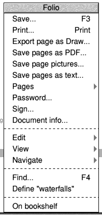
Part II: ReadingGetting round, getting comfortable, and keeping your books
4 Finding your way round a document
Thumbnails
Click the first toolbar button (or choose View → Thumbnails) to open a drawer of small pages down the left of the window. The window widens to make room, and narrows again when you close it. The page you're reading is framed in blue; click any thumbnail to go to that page.
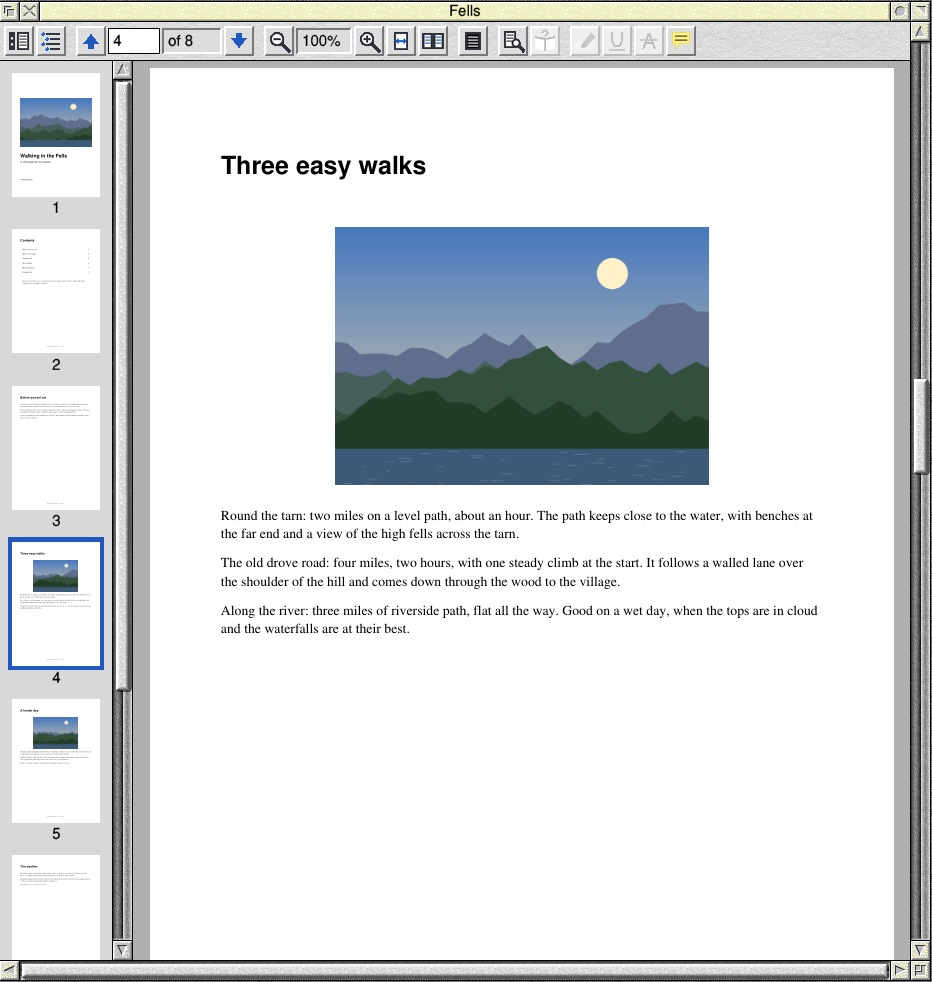
Contents
Many PDFs and most ebooks have a list of their chapters and sections. Click the second toolbar button (or Navigate → Contents...) to see it, with each part's page number. The part you're reading is highlighted. Click on one to go there.
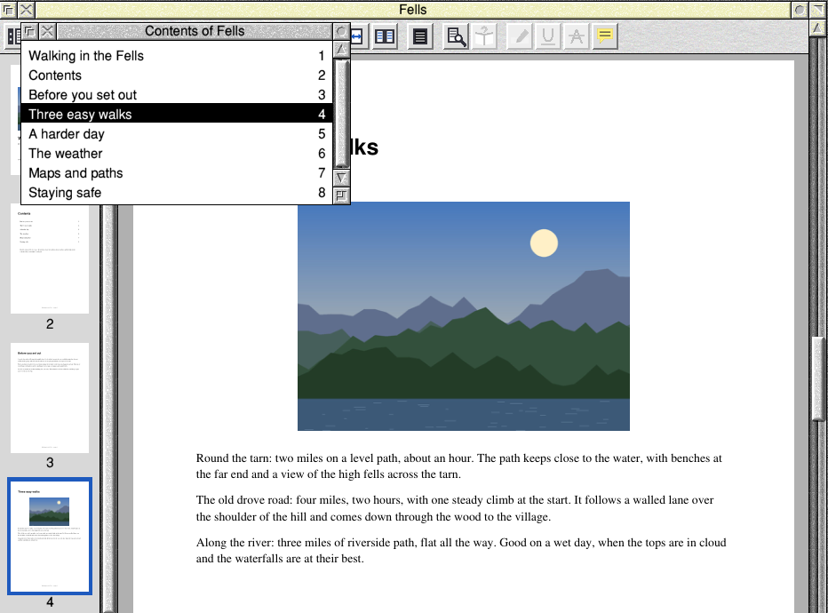
If the document has no contents list, the window says so.
Links
Links have a blue line under them. Click one to follow it. A link to another part of the document goes there; a web or email link opens in your web browser or mail program, after Folio has asked you (Chapter 17). To come back after following a link, choose Navigate → Back or press Ctrl+←. Back goes back link after link, and also returns from Go to page and from Contents.
Find
Press F4 (or click the Find button, or choose Find...) and type what you're looking for. Press Return or click Next to find it, and Previous to go back. Capitals don't matter. The search starts at the page you're reading and goes round the end of the document once. What it finds is selected, so you can copy it or look it up straight away.
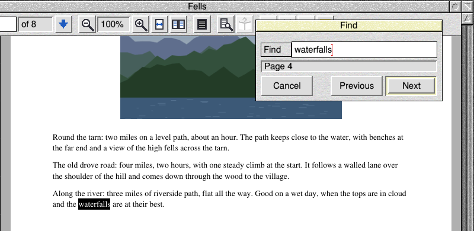
5 Changing how pages look
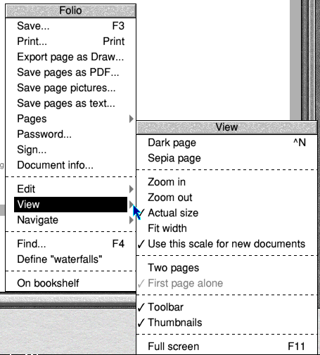
Size
Click the zoom buttons, or choose View → Zoom in, Zoom out or Actual size. Fit width makes the page fill the window's width, which is usually the most comfortable for reading.
If you always want documents larger (or smaller), zoom one to the size you like, then choose View → Use this scale for new documents. Every document you haven't opened before opens at that scale from then on. It's in Choices, too.
Two pages side by side
Click the two-pages button (or View → Two pages) to see the pages in pairs. The window widens to make room. Page Down and Page Up then move a pair at a time.
With First page alone ticked (as it is to start with), the first page sits on its own on the right, and the rest pair up as in a printed book: left-hand pages on the left. Untick it for pages 1 and 2 side by side.
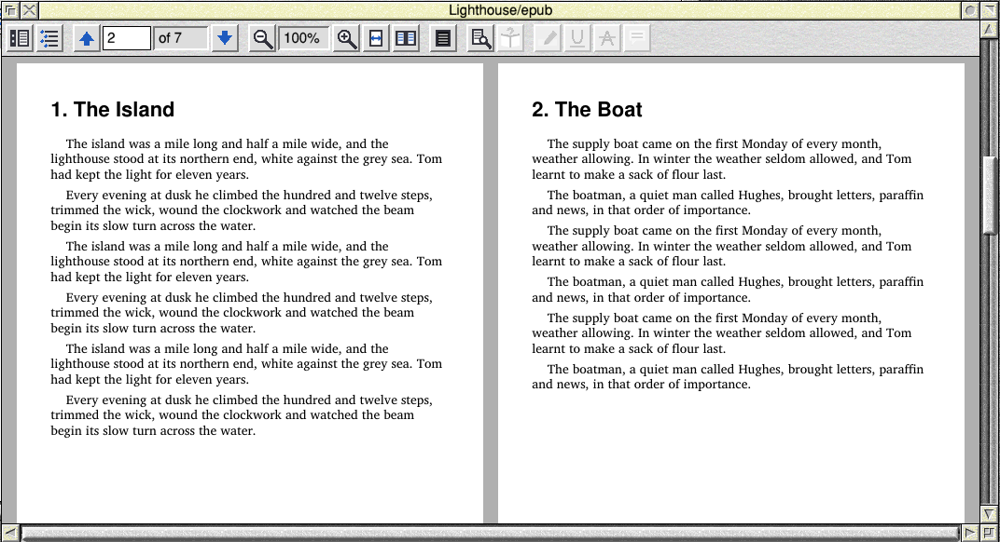
Dark and sepia pages
Dark page (Ctrl+N, or the toolbar button) shows light text on black, which many people find easier late at night. Pictures keep their colours. Sepia page gives a warm, paper-like tint.
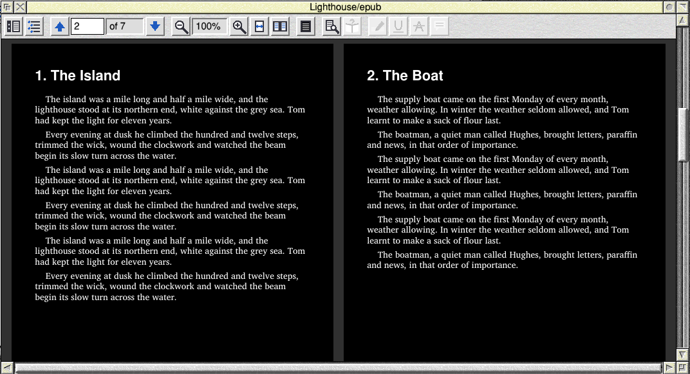
Full screen
F11 (or View → Full screen) fills the screen with the document, with no title bar, scroll bars or toolbar. F11 or Escape returns to the desktop.
Choices
Choose Choices... from the icon bar menu to set how new documents open: the scale, the page colour, two pages, and the toolbar. The other sections are covered in later chapters. Save uses and keeps them; Default fills in Folio's own settings.
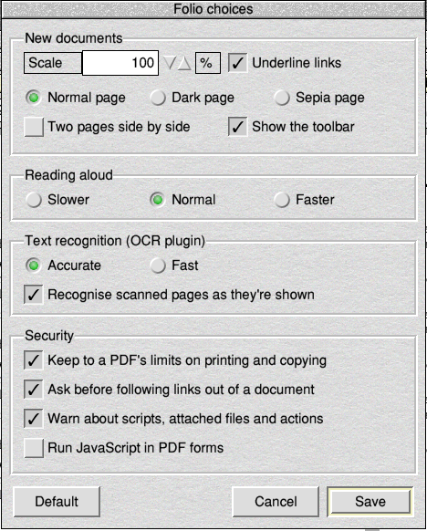
6 The bookshelf and ebooks
Click Select on Folio's icon bar icon to see your bookshelf: the covers of your books, with how far you've read each. Double-click a cover to open the book at your place in it.
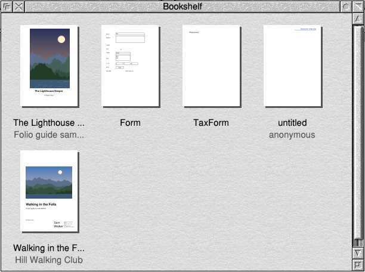
Putting books on it
- Drag books to the bookshelf window.
- Or tick On bookshelf on a document's menu.
- Or drag a directory to the bookshelf: Folio watches it, and looks in it (and the directories inside it) for new documents each time it starts, and when you choose Refresh from the bookshelf's menu.
Watched folders... on the bookshelf's menu lists the directories Folio watches; click Stop watching to drop one. Sort by recent, Sort by title and Sort by author put the books in order. Show in Filer opens the directory a book is in.
Ebooks
An EPUB, FB2 or MOBI book has no pages of its own: the text flows to fit whatever reads it. Folio lays it out on pages 400 by 600 points (about the size of a paperback) with 11-point text. The first time you open a book, Folio counts its pages in the background, so the page count may grow for a moment; after that it remembers.
/epub.<Choices$Write>.Folio.Shelf, its covers in <Choices$Write>.Folio.Covers, and ebook page counts in <Choices$Write>.Folio.Layouts.7 Selecting, copying and looking words up
Drag with Select over text to select it. Double-click a word to select just that word. Click with Adjust to extend the selection. A selection can run on over the next pages: drag past the window's top or bottom and it scrolls, faster the further out you go.
| Key | Does |
|---|---|
| Ctrl+C | Copy the selection to the clipboard, to paste into Edit, a word processor, or anything else |
| Ctrl+A | Select the whole page |
| Escape | Clear the selection |
Define
Select one word, then click the Define button, or choose Define "word" from the menu. Its meanings from Wiktionary appear in a small box near the word. Copy copies them; clicking Wiktionary opens the whole entry in your browser.
8 Reading aloud and scanned pages
Reading aloud (Speech plugin)
With the Speech plugin installed (Chapter 2), a speaker button appears at the right of the toolbar, and Read aloud, Speak selection and Reading speed on the document's menu.
Read aloud starts at the top of what you can see of the page (or at the sentence the selection is in) and carries on through the document. The sentence being read has a tinted band, and the pages turn as it goes. Click the button again to stop. Speak selection reads just the selected text.
Scanned pages (OCR plugin)
A scanned PDF is pictures of pages. There's no text in it to find, select or read aloud. With the OCR plugin installed, the document's menu gets Text recognition, and Folio reads the words in each scanned page as you come to it. The window's title tells you when it's working. After that, Find, selecting, Copy, Define and Read aloud all work on the scan.
- Recognise all pages does the whole document in the background, so Find can search all of it.
- Recognise this page does just the page you're on.
- Accurate makes fewer mistakes; Fast takes about half as long. Choose on the same menu, or in Choices.
- Add recognised text to the PDF makes a searchable copy (below).
What's recognised is kept, so it isn't done again next time.
Making a searchable PDF
Once every page has been recognised, choose Text recognition → Add recognised text to the PDF. The words go into the PDF itself, as invisible text over their pictures, the way scanning programs do it. The pages look just the same, but now other programs, and other readers, can find, select and copy the text too. Save (F3) to keep it; Ctrl+Z takes it out again.
Part III: Marking Up and Filling InNotes, drawings, measurements and forms
9 Highlights, notes and saving
These work in PDFs. Ebooks can't be marked yet.
Highlighting, underlining and striking out
- Select some text.
- Click Highlight, Underline or Strike out on the toolbar (or choose them from the Edit menu).
A selection over several pages is marked on each of them. Click on a highlight to select it; Delete removes it.
Notes
Click Note to add a note at the selection, or at the top of the page if nothing is selected. Type the note and click OK. The note shows on the page as a small icon; click it to read, change or delete the note.
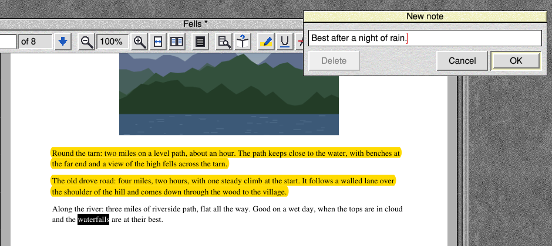
Colours
Edit → Colour chooses the colour of new markings: yellow, green, blue, pink, red, orange, purple or grey, or the usual colours (yellow highlights and notes, blue underlines, red strike-outs). Folio remembers your choice. If you've clicked on a marking first, it changes to the new colour too.
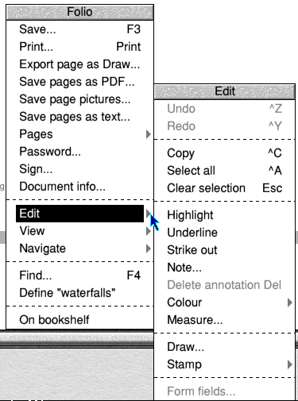
The list of annotations
Every highlight, note, drawing and the like is an annotation. Navigate → Annotations... lists all of them in the document, including those made in other programs: the page, the colour, what kind it is, the note's text or the text it marks, and who made it. Click on one to go to it and select it. The list keeps up as you make changes.
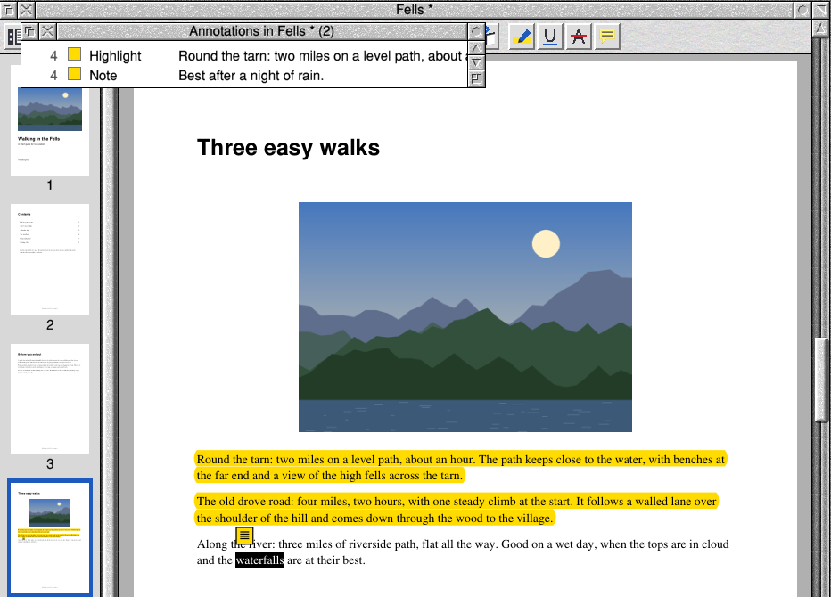
Undo and saving
Ctrl+Z undoes the last change and Ctrl+Y redoes it. While there are changes to save, the window's title has a * after the name.
Press F3 (or choose Save...) to save the PDF with your notes and markings. As everywhere on RISC OS, drag the file icon to a directory, or click Save to save it over the original.
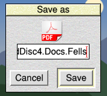
10 Drawing, stamps and your signature
Drawing
Edit → Draw... opens the Draw window. Drag with Select on the page to draw, in black, blue or red, with a thin, medium or thick pen. Adjust (or Undo) takes the last stroke off. Keep puts the drawing on the page; so does closing the window, or starting to draw on another page.
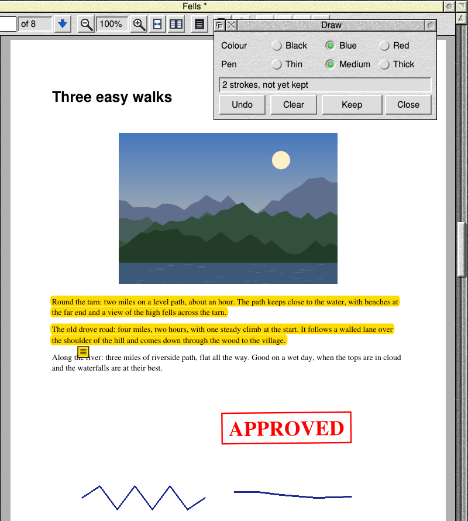
Stamps
Edit → Stamp lists the standard stamps: Approved, Not approved, Draft, Final, Confidential, For comment and others. Choose one, then click on the page where it goes. Escape (or Adjust) gives up.
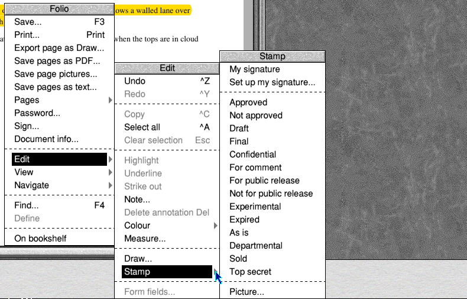
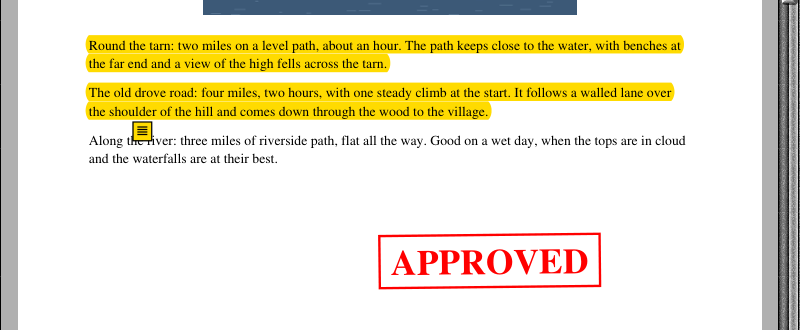
Pictures
Stamp → Picture... puts a picture on the page: a logo, or a signature written on paper and scanned. Drag the picture file (JPEG, PNG and so on) into the box, then click on the page. Tick Make white see-through to let the page show through the paper.
My signature
Edit → Stamp → Set up my signature... keeps your handwritten signature for putting on documents. Write it on the pad with Select (Adjust takes the last stroke off), or drag a scanned picture of it into the window, and choose how big it goes on the page. Save keeps it. From then on, Edit → Stamp → My signature and a click on the page puts it there.
Each drawing, stamp or picture is an annotation: Ctrl+Z undoes it, and Delete removes it once you've clicked on it.
11 Measuring
Edit → Measure... opens the Measure window. While it's open, click with Select on the page to add points. Red lines join them; Adjust takes the last point off. The window shows the last line's length, all the lines together, and, with three points or more, the area they enclose.
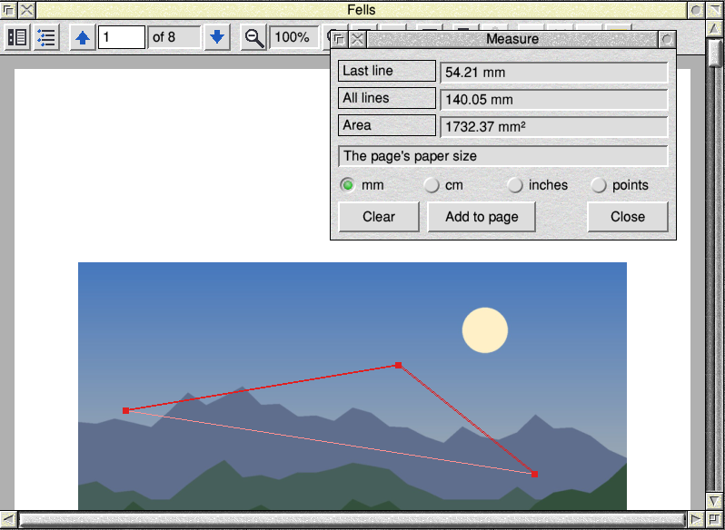
Lengths are in mm, cm, inches or points, at the page's paper size. A plan or drawing whose PDF gives it a scale of its own (1 inch = 10 feet, say) is measured in its own units, and the window says so. Add to page keeps the measurement on the page, with the figures as its note. Clear starts again. Close the window to stop measuring.
12 Filling in forms
Many PDFs are forms with boxes to fill in. Click on a box to fill it in.
- Text boxes open for typing over the page. Return or Tab keeps what you've typed (Tab then goes to the next box, Shift+Tab back); Escape leaves the box as it was. In a box of several lines, Return and the arrow keys move between the lines.
- Tick boxes and radio buttons are ticked by a click.
- Lists and drop-downs show their choices as a menu.
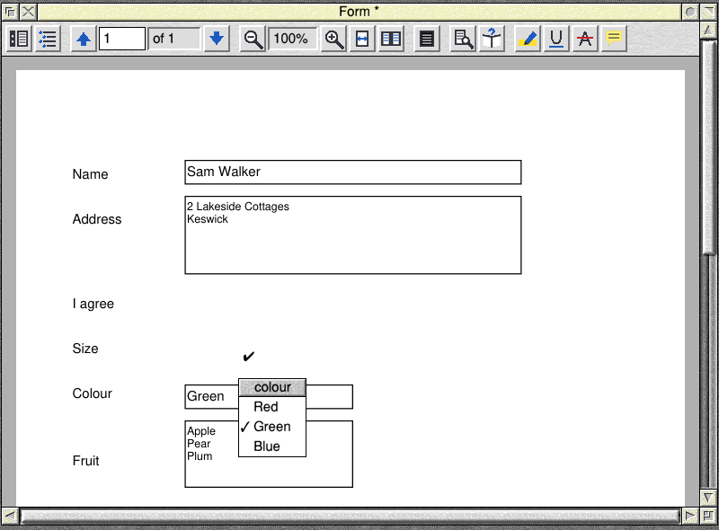
Ctrl+Z undoes each change. F3 saves the PDF with what you've filled in.
XFA forms
Some forms are XFA forms, made with Adobe's LiveCycle Designer: the form's design and its values are kept inside the PDF in Adobe's own way. Folio can't draw an XFA design, but it can fill one in as a list. Edit → Form fields... lists every field with what's in it; click on one to type in it, choose from its choices, or tick it.
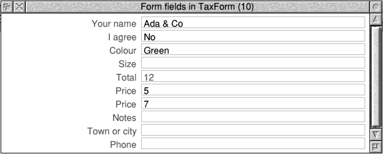
A "dynamic" XFA form's page only says "Please wait..." (it needs Adobe Reader to draw it); Folio opens its Form fields window for you. Save (F3) keeps what you've filled in, and Adobe Reader shows it when the form is opened there.
Part IV: Pages and FilesRearranging PDFs, making new ones, and getting things out
13 Turning, deleting, moving and adding pages
Pages on the document menu works on a PDF's pages.
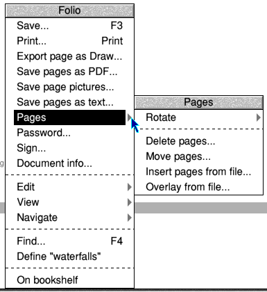
| Item | Does |
|---|---|
| Rotate | Turns the page you pressed Menu over, or every page, a quarter turn either way or a half turn: for a page fed in the wrong way up, or a landscape page scanned upright. Ctrl+R and Ctrl+L turn the page under the pointer clockwise and anticlockwise. |
| Delete pages... | Opens a small box with the page you pressed Menu over. Type others if you like, then click Delete. |
| Move pages... | Moves the pages you type, in their order, in front of another page, or to the end if you leave that empty. |
| Insert pages from file... | Asks which page the new pages go in front of (leave it empty for the end); then drag a PDF, a picture, a text file or another document into the box, and its pages go in. |
| Overlay from file... | Lays a page from another file over the pages (Chapter 14). |
Typing pages
Wherever Folio asks which pages, you can type one page (3), a range (1-10), several (1-3, 20, 45-50), from a page to the end (20-), or all.
Each change is one step: Ctrl+Z puts it back, and F3 keeps it. Recognised text (Chapter 8) goes with its page when it moves.
14 Laying one page over others
Pages → Overlay from file... lays the first page of another file over the pages you choose, or behind them. Use it for your initials or a reference on every page, a "Copy" mark, or headed paper behind a letter.
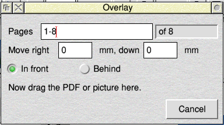
- Type which pages to cover (all of them to start with).
- Choose In front (over the page) or Behind (under the page's own drawing, like headed paper).
- If you need to nudge it, type how far to move it right and down, in mm. A minus number moves it left or up.
- Drag the PDF (or a picture) into the box.
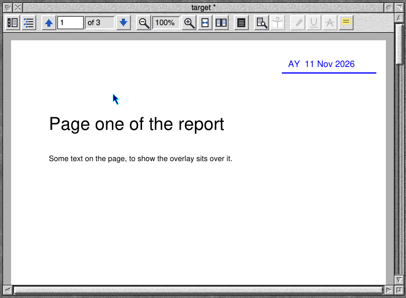
15 Making new PDFs
Create PDF: joining files
Create PDF... on the icon bar menu opens a window to collect files in. Drag PDFs, pictures (JPEG, PNG, GIF, BMP, TIFF, PBM/PGM/PPM), text files, or other documents Folio reads into it, several at a time if you like. A directory dragged in adds its PDFs and pictures, in name order.
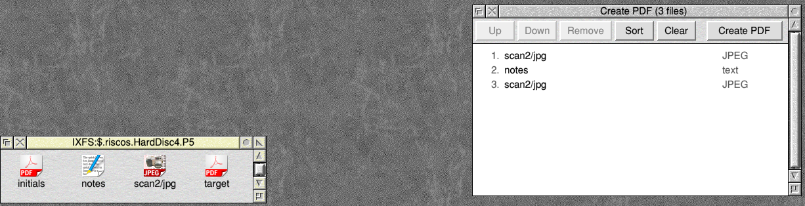
They're listed in the order they'll go. Click one to choose it, then use the buttons along the top: Up and Down move it, Remove takes it off the list (the file isn't touched), Sort sorts the list by name (with Page2 before Page10), and Clear empties it. Create PDF joins them into one new PDF, which opens in a window called Combined, not yet saved. Press F3 to save it where you want it.
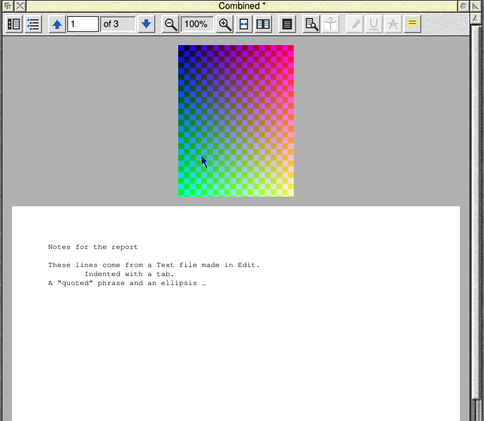
- A PDF's pages are copied just as they are: pictures, fonts, notes and form fields.
- A picture becomes a page its own size. JPEGs go in as they are, not compressed again.
- A text file (a Text file, as Edit saves it, or a name ending
/txt) is laid out on A4 pages in fixed-width type, 10 point, with long lines wrapped. A form feed (Ctrl+L in Edit) starts a new page. - An ebook is laid out as Folio shows it.
The window stays open, with its list, so you can change it and make another.
A directory of pictures
Drag a directory of pictures to Folio's icon bar icon, or to a document window, and Folio makes a PDF of them, a page for each, in name order, and opens it. The new PDF is named after the directory and isn't saved anywhere yet: press F3 to save it.
Scanning
Scan... on the icon bar menu scans from a scanner on your network that understands eSCL (also called AirScan), as most network scanners and printer-scanners of the last ten years do. No driver is needed.
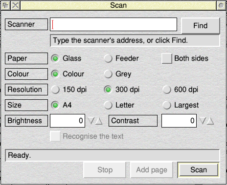
- Type the scanner's IP address (such as
192.168.0.40), or click Find to look for scanners on your network. If it finds several, choose one from the menu. - Choose the glass (one page) or the feeder (every page in it, and both sides if the scanner can), colour or grey, 150, 300 or 600 dpi, and A4, Letter or the largest size.
- Click Scan. Folio carries on while the scanner works; Stop ends the scan, keeping the pages so far.
The pages open as a new PDF called Scan, with the scanner's own JPEGs in it. For several pages from the glass, scan the first, then put each next page on the glass and click Add page. With the OCR plugin, Recognise the text reads the words in every page as soon as the scan opens.
16 Getting things out: saving, exporting and printing
The document menu has several ways of taking things out of a document.
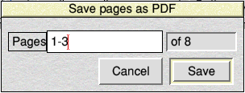
| Item | Makes |
|---|---|
| Save pages as PDF... | A new PDF of some of the pages. Type which, click Save, and drag the icon to a directory. A PDF's pages are copied just as they are. Other documents' pages (CBZ, XPS, ebooks) are drawn into PDF pages; a CBZ of JPEGs becomes a PDF of the same JPEGs. |
| Save page pictures... | A directory of pictures, Page001, Page002 and so on. A page that is one picture (a scanned page) gives that picture just as the PDF stores it: a JPEG comes out as the same JPEG, byte for byte. Any other page is drawn as a PNG, at 150 dpi unless you change it. |
| Save pages as text... | A text file of the pages' text, a paragraph to a line (Edit and StrongED wrap it to the window), with a blank line between paragraphs. Words split at a line's end are joined again. |
| Export page as Draw... | The page you're reading as a Draw file: drag its icon to a directory, or straight into Draw. Lines and shapes become Draw paths, text becomes outlines (so it looks the same without the document's fonts), and each picture becomes a sprite of its own. |
?. Draw can't clip or blend, so in a Draw file see-through effects are lost, and highlighter marks go under the text.Printing
Print... on the document's menu (or the Print key) opens the Print box: all pages or some, copies, scale, upright or sideways, and draft. It needs !Printers loaded with a printer chosen.
Each page is printed as big as it really is (smaller if it wouldn't fit the paper), in the middle of the paper, always on white, with your notes and markings. Printing goes on in the background while you carry on; the window's title shows which page it's on. Choose Print... again (or close the window) to stop it.
Part V: Security and SignaturesWhat's in a PDF, passwords, and signing
17 What's in a PDF, and keeping safe
Document info
Document info... shows the file's name, where it is and its size, then what the document says about itself: title, author, subject, the program that made it, when it was made and changed, its PDF version, pages and page size, its security and what its author allows, whether it has a form, attached files or JavaScript, its bookmarks, layers and pictures, its digital signatures, and every font it uses, with whether each is embedded in the PDF.
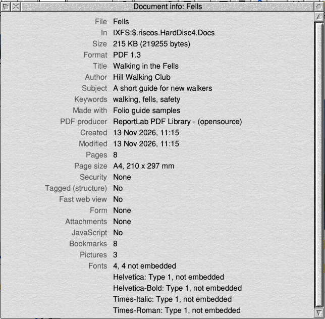
!Folio.Fonts.Warnings about what a PDF can do
A PDF can contain JavaScript, attached files, links that would start a program, and ways to send a form somewhere. When you open one that does, Folio says so, and doesn't do any of those things.
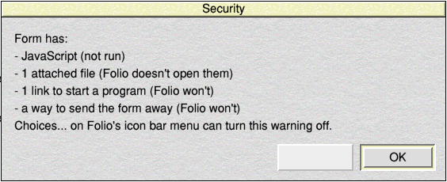
Folio also asks before following a link out of a document (to a web page, an email address or another file), showing where it goes. Links to other programs are never followed.
A PDF's restrictions
A PDF's author can say it mustn't be printed, copied from or filled in. Folio keeps to that: Print, Copy and the ways of saving pages say so instead, and offer to lift it with the document's owner password.
The Security part of Choices turns each of these on or off.
18 Passwords
If a PDF needs a password to open, Folio asks for it.
Password... on a PDF's menu shows whether it has a password, and puts one on or takes it off.
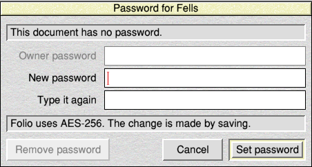
- Type the new password twice.
- Click Set password. The Save box opens.
- Save. The password is on the file once it's saved.
Remove password saves it without one. A PDF that anyone can open but that has an owner password needs that password first.
!System.19 Digital signatures: checking and signing
A digital signature is proof that a PDF hasn't been changed since it was signed, together with a certificate saying who signed it. Unlike a scanned signature, it can't be copied onto another document.
Checking a signature
Click on a signature on the page to see who signed it and when, whether the document is as it was signed, and whether the signer's certificate comes from a body Folio trusts. Document info lists every signature too. If a signature has been broken, Folio says so as the PDF opens.
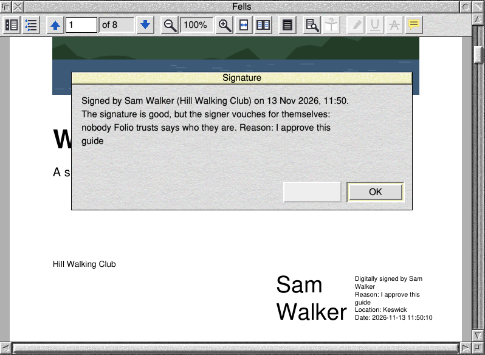
| Folio says | It means |
|---|---|
| Good | The document is exactly as it was signed, and the certificate comes from a body Folio trusts. |
| Signer not confirmed | The signature is good, but the certificate doesn't come from a body Folio trusts, so who signed can't be confirmed. |
| Changed since | Changes were saved after the signature, such as a form filled in or notes added. What was signed is still as it was; clicking the signature lists what changed. |
| Broken | The document was changed in a way the signature doesn't allow. Don't trust it. |
Trusted in <Choices$Write>.Folio, and run Folio again. Changes saved after a signature are judged as Acrobat judges them, by the certification and the fields each signature locks.Signing a PDF
To sign, you need a certificate with its private key, in a .p12 or .pfx file (the kind a certificate authority issues, or that other programs export), and its password.
- Choose Sign... from the document menu, or click on an empty signature field.
- Drag your certificate file into the Sign box.
- Type its password and, if you like, a reason (such as "I approve this document") and where you are.
- Choose the kind of signature (below).
- Click Sign. The Save box opens: the signature is made as the PDF is saved.
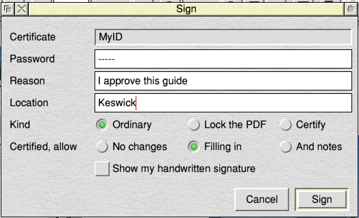
| Kind | Means |
|---|---|
| Ordinary | Changes can still be saved after it; they're shown when it's checked. |
| Lock the PDF | No changes after it; its fields can't be filled in. |
| Certify | The first signature only. Allows no changes, or filling in and signing, or those and notes too. |
A new signature goes at the foot of the page, on the right; an empty field is signed where it is. Tick Show my handwritten signature to put your handwritten signature (Chapter 10) beside your name.
Part VI: The Part of TensQuick wins, deeper features, and fixes
20 Ten keys to learn first
| Key | Does |
|---|---|
| Page Down / Page Up | Next / previous page |
| Home / End | First / last page |
| F4 | Find |
| F5 | Go to a page |
| Ctrl+← | Back, after a link, Contents or Go to page |
| Ctrl+N | Dark page on and off |
| F11 | Full screen |
| Ctrl+C | Copy the selected text |
| Ctrl+Z / Ctrl+Y | Undo / redo |
| F3 | Save |
21 Ten things for experienced users
- Open at a page from a script. Set
Folio$OpenPagefirst; it works whether or not Folio is running, and is unset once used:Set Folio$OpenPage 12 Filer_Run SDFS::Disc.$.Docs.Manual/pdf
Run <Folio$Dir>.!Run -page 12 <file>does the same. - The log.
<Wimp$ScrapDir>.FolioLogrecords what Folio did. It starts afresh each time Folio runs, so copy it before running Folio again if you want to report a problem. - Your settings are in
<Choices$Write>.Folio: Choices, the bookshelf (Shelf, Covers), reading places (Places), ebook page counts (Layouts), dictionary entries (Dict), and your handwritten signature. - Trusting your own certificates. Put them in
<Choices$Write>.Folio.Trustedas PEM (Chapter 19). - Incremental saving. Folio adds changes to the end of a PDF wherever it can, as Acrobat does, so signatures stay good. Setting or removing a password writes the whole file again.
- Lossless pictures. JPEGs go into new PDFs, and come out of Save page pictures, byte for byte: nothing is compressed again.
- Searchable scans. Recognise all pages, then Add recognised text to the PDF, and the PDF is searchable everywhere, not just in Folio.
- Is my scanner eSCL? Open
http://<its address>/eSCL/ScannerCapabilitiesin a web browser: a page of XML means it is. - Restrictions. To have Folio ignore a PDF's limits on printing and copying, untick Keep to a PDF's limits on printing and copying in Choices. Respect the author's wishes where they apply to you.
- A form's JavaScript runs only if Choices allows it, and even then it can't reach your files or the network.
22 Ten problems and what to do about them
| Problem | What to do |
|---|---|
| Folio says it needs a 32 thousand or more colour screen mode. | Folio needs a 32 thousand or more colour screen mode. Change it in Display Manager. |
| Double-clicking an EPUB does nothing. | RISC OS shows it as a Data file. Drag it to Folio's icon, or rename it to end /epub (Chapter 6). |
| Find doesn't find text I can see. | The page is probably a scan: a picture of text. Use the OCR plugin (Chapter 8). |
| Highlight and Note are grey. | Select some text first. Ebooks can't be marked yet; signed or restricted PDFs may not allow notes. |
| Print or Copy says the author doesn't allow it. | Type the owner password if you have it, or see Chapter 21, number 9. |
| A web link does nothing. | Folio asks before following it; check the question box isn't behind a window. You need a web browser that has been seen by the Filer. |
| User guide says there's no web browser. | Run NetSurf (or another browser) once, so RISC OS knows it, then try again. Or open !Folio.Guide.index/html yourself. |
| A document opens at the wrong page. | Folio opens at the place you left it. Press Home for the first page. |
| Define says it can't reach the dictionary. | It needs the network. Words looked up before still work. |
| Something else went wrong. | Copy <Wimp$ScrapDir>.FolioLog before running Folio again, and report it, with the log, in Folio's thread on the RISC OS Open forum (forum.riscosopen.org), or as an issue at github.com/adyoull/riscos-folio/issues. |
Appendix: keys, mouse and menus
Keys in a document window
| Key | Does |
|---|---|
| Page Down / Page Up | Next / previous page (a pair at a time with two pages) |
| Home / End | First / last page |
| ↓ / ↑ | Scroll a little |
| F3 | Save |
| F4 | Find |
| F5 | Go to page |
| F11 | Full screen on and off (Escape also leaves it) |
| Ctrl+N | Dark page on and off |
| Ctrl+← | Back |
| Ctrl+C | Copy |
| Ctrl+A | Select the whole page |
| Escape | Clear the selection |
| Delete | Delete the annotation clicked on |
| Ctrl+Z / Ctrl+Y | Undo / redo |
| Ctrl+R / Ctrl+L | Turn the page under the pointer clockwise / anticlockwise |
| Ctrl+F2 | Close the window |
Mouse
| Where | Select | Adjust |
|---|---|---|
| Icon bar icon | Open the bookshelf | – |
| Text on the page | Drag to select; double-click a word | Extend the selection |
| Link | Follow it | – |
| Annotation | Select it; a note opens | – |
| Form field | Fill it in | – |
| Signature | Check it (sign it, if empty) | – |
| Thumbnail | Go to that page | – |
| Page, while drawing | Draw | Take the last stroke off |
| Page, while measuring | Add a point | Take the last point off |
| Window's close icon | Close | Close and open the document's directory |
| Bookshelf cover | Double-click: open the book | – |
Menus
Click Menu over the pages for the document menu. As everywhere on RISC OS, choosing with Adjust keeps the menu open.
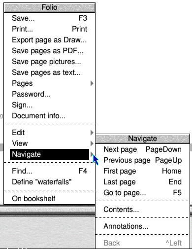
| Menu | Items |
|---|---|
| Document | Save... (F3); Print...; Export page as Draw...; Save pages as PDF...; Save page pictures...; Save pages as text...; Pages →; Password...; Sign...; Document info...; Edit →; View →; Navigate →; Find... (F4); Define "word"; On bookshelf. With the plugins: Text recognition →; Read aloud, Speak selection, Reading speed →. |
| Pages | Rotate →; Delete pages...; Move pages...; Insert pages from file...; Overlay from file... |
| Edit | Undo; Redo; Copy; Select all; Clear selection; Highlight; Underline; Strike out; Note...; Delete annotation; Colour →; Measure...; Draw...; Stamp →; Form fields... |
| Stamp | My signature; Set up my signature...; Picture...; Approved, Not approved, Draft, Final, Confidential, For comment, For public release, Not for public release, Experimental, Expired, As is, Departmental, Sold, Top secret |
| View | Dark page; Sepia page; Zoom in; Zoom out; Actual size; Fit width; Use this scale for new documents; Two pages; First page alone; Toolbar; Thumbnails; Full screen (F11) |
| Navigate | Next page; Previous page; First page; Last page; Go to page... (F5); Contents...; Annotations...; Back (Ctrl+←) |
| Icon bar | Info →; Bookshelf...; Create PDF...; Scan...; Choices...; Help...; User guide; Quit |
| Bookshelf | Open (Return); Remove from bookshelf (Delete); Show in Filer; Sort by recent; Sort by title; Sort by author; Watched folders...; Refresh; Remove missing books |
Folio is free software under the AGPL-3.0 licence, and includes MuPDF (Copyright Artifex Software, AGPL). Its source is at github.com/adyoull/riscos-folio. Meanings shown by Define come from Wiktionary, under CC BY-SA.